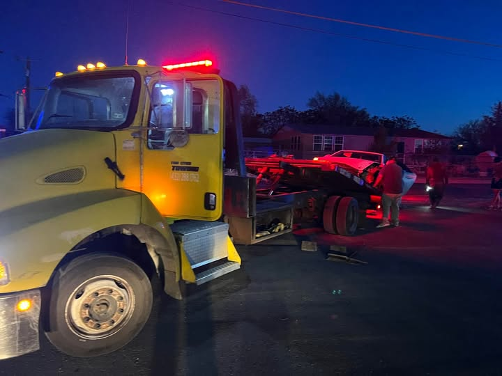

Precision Logistics for the Permian Basin
In the heart of the West Texas oil fields, reliability isn't a luxury, it's the standard. Two Cities Towing provides an architectural approach to roadside recovery, bridging the gap between Midland and Odessa with heavy-duty precision.
Core Capabilities
Structural integrity in every lift. From light-duty lockouts to heavy industrial recovery, we treat every asset like a critical component of the city grid.
Towing
Flatbed and wheel-lift options for precision vehicle transport across the Permian.
art_trackRoadside
Fuel delivery, jump starts, and tire changes executed with professional urgency.
handymanLockouts
Non-destructive entry specialists equipped with professional-grade tooling.
keyRecovery
Heavy-duty winching and complex incident management for commercial assets.
build
Reliability is a Constant.
Two Cities Towing & Roadside LLC was founded on a simple principle: industrial excellence. We don't just move vehicles; we manage the flow of the Permian Basin's logistics.
Serving Midland and Odessa 24 hours a day, 7 days a week, our fleet is positioned to respond with architectural speed. When the grid fails you, we are the reinforcement.
Strategic Location
1261 W. Apple St.
Midland, TX 79701
info@twocitiestowing.com
(432) 288-1762